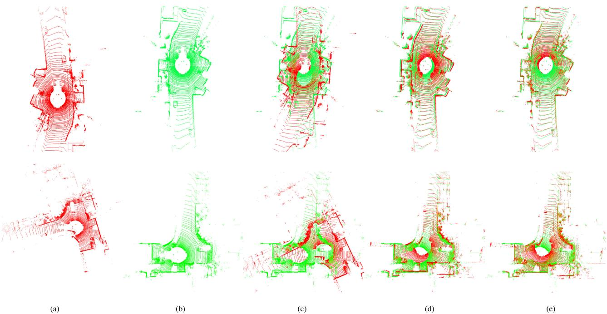
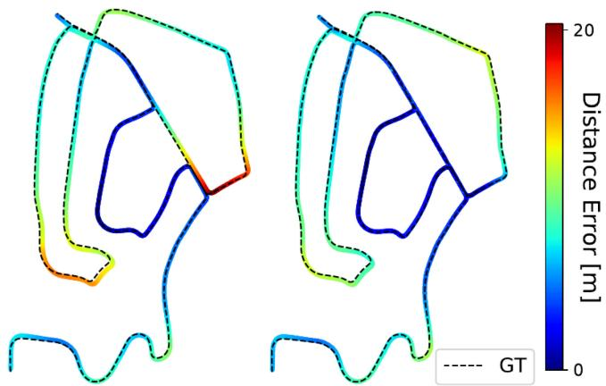
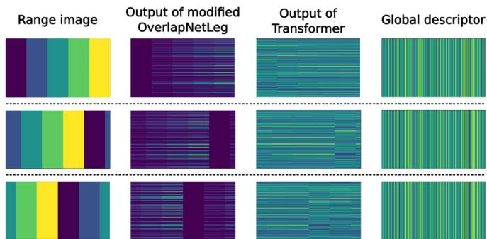

单帧点云 / 图像经骨干网络后，会得到 N 个局部特征（每个点 / 每个 patch 一个向量）。但检索要的是一个定长全局向量。NetVLAD 的做法：预先有 K 个「簇中心」（如 K=64），每个局部特征按相似度「软分配」到各簇，再对每簇求「特征减中心」的加权和，最后把 K 个簇的结果拼起来。直觉上就是——
这张图在画什么：上面 N 个彩色点是骨干网络吐出的局部特征；中间漏斗把它们按相似度「软分配」到 K=64 个簇（桶）；每个桶对分到的特征求加权平均（NetVLAD 里是「特征减簇中心」的加权和）；最后把 64 个桶的结果拼成一个定长向量（LCDNet / OT 都是 256 维）。 怎么看这张图：① 软分配意味着一个特征可以同时「部分属于」多个簇，比硬分配更平滑、更鲁棒。② 无论输入多少点（N 可变），输出永远是 K 个桶拼成的定长向量——这正是检索能用「最近邻」比的原因。③ NetVLAD 是连接「零散特征」与「可检索向量」的桥梁，0138 的 SALAD 会把它重写成最优传输。 要记住的一句话：NetVLAD = 把一堆局部特征聚成 K 个桶、拼成定长向量；输出维度固定，和输入点数无关。
原图注（Fig. 2）：Overview of our proposed LCDNet which is composed of a shared feature extractor (green), a place recognition head (blue) that generates global descriptors, and a relative pose head (orange) that estimates the transformation between two point clouds. We use three loss functions to train LCDNet (triplet loss, aux loss, and pose loss) which are depicted in purple. 怎么看这张图：绿色是共享编码器，蓝色头出全局描述子（检索），橙色头出相对位姿（UOT）。这就是「检索 + 位姿」双头共享 backbone 的结构全景——和 0135 那种「只出相似度」的纯几何描述子形成对比。

原图注（Fig. 6）：Qualitative comparison of ICP alignment with and without using the LCDNet prediction as the initial guess. ICP alone (c) is not able to register the (a) source and the (b) target when the initial rotation misalignment is high. Whereas, our LCDNet effectively aligns them (d). The final ICP alignment with the prediction of our LCDNet as the initial guess further improve the results (e). 怎么看这张图：左 (a)(b) 是源和目标（初始旋转偏差很大），(c) 纯 ICP 注册失败，(d) 用 LCDNet 预测的位姿当初值就对齐了，(e) 再跑 ICP 更精。这直观展示了 UOT 位姿头「先给个好初值、再精修」的价值——尤其在反向回环这种大转角场景。

原图注（Fig. 8）：Performance of LIO-SAM with the original loop closure detection method (left) compared to our approach (right) on sequence 02 of the KITTI dataset. 怎么看这张图：左边是 LIO-SAM 原装回环（漂移没被有效纠正），右边是换上 LCDNet 回环后的结果——轨迹明显更闭合、更准。这是「学习式回环集成进真实 SLAM」的落地证据，也呼应 0014 铁律：好的回环能修正长期漂移。
4. OverlapTransformer：旋转不变「长」进网络
OverlapTransformer 走了另一条更轻的路：只用 range image 的深度一通道，靠结构保证旋转不变，而不是像 Scan Context 那样「暴力列移去搜」。它的洞察很巧：
原图注（Fig. 2）：Pipeline overview of our proposed approach. We take a 64-beam LiDAR as an example to introduce the dimensions of feature maps. The Range Image Encoder (RIE) compresses range images from the Lidar sensor to yaw-angle-equivariant feature maps. The Transformer Module (TM) concatenates feature maps from Range Image Encoder and discriminativeness-enhanced feature maps from Transformer Attention. Global Descriptor Generator (GDG) generates yaw-angle-invariant descriptors exploiting the combination of MLP and NetVLAD. 怎么看这张图：从 range image → RIE（压竖维、保水平维 → yaw 等变）→ Transformer（增强判别力，仍等变）→ NetVLAD（对列集合置换不变 → yaw 不变）→ 256 维描述子。整条链「等变逐层传导、最后聚合变不变」，这就是「旋转不变长进网络」的工程真身。

原图注（Fig. 3）：An illustration of our yaw-angle-invariant descriptors exploiting a toy example. As can be seen that the range image presentation, our range image encoder, and attentional feature transformer are yaw-angle-equivariant, and our global descriptor generator generates yaw-angle-invariant global features. 怎么看这张图：用玩具例子展示「range image 表示 → 编码器 → Transformer → NetVLAD」每一环对 yaw 列移都是等变的，最后 NetVLAD 聚合把它变成不变。对比 Scan Context 需要显式去搜最佳列移，这里「不变性是免费的、结构送的」。
NetVLAD 先有 K 个簇中心；每个局部特征按相似度「软分配」到 K 个簇；对每个簇求「特征减中心」的加权和；最后把 K 个簇的结果拼成一个定长向量（LCDNet/OT 都是 256 维）。无论输入有 N=4096 还是别的点数，输出永远是 K 个桶拼成的固定长度——所以检索能用最近邻直接比。这就是「漏斗倒进 K 个桶、各桶取加权平均、拼成定长向量」。